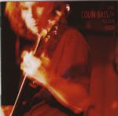

Home Artist links Label link

| Artist: | Colin Bass |
| Title: | Live At Polskie Radio 3 |
| Label: | Oskar/Kartini |
| Length(s): | 43+50 minutes |
| Year(s) of release: | 1999 |
| Month of review: | 06/2000 |
Line up
Colin Bass - vocals, bass, acoustic guitar
Dave Stewart - drums
Emilia Derkowska - vocals
Zbyszek Florek - keyboards
Marcin Blaszczyk - keyboards
Szymon Brzezinski - guitar, acoustic 12-string
Maciek Meller - guitar
Radek Scholl - bass on 6,7 (cd 1) and 3,4,6,7 (cd 2)
Jacek Zasada - flutes
Tracks
Disc 1:
| 1) | Introduction By Piotr Kaczkowski | 0.52
|
| 2) | City Life | 5.09
|
| 3) | Refugee | 3.45
|
| 4) | Hymn To Her | 5.30
|
| 5) | Macassar | 6.38
|
| 6) | As Far As I Can See | 6.52
|
| 7) | Goodbye To Albion | 7.17
|
| 8) | Aissa | 6.01
|
| 9) | Denpasar Moon | 4.20
|
Disc 2:
| 1) | No Way Back | 7.39
|
| 2) | Holding Out My Hand | 6.56
|
| 3) | Burning Bridges | 5.00
|
| 4) | Reap What You Sew | 7.21
|
| 5) | Drafted | 4.28
|
| 6) | Cloak And Dagger Man | 4.09
|
| 7) | Your Love Is Stranger Than Mine | 3.22
|
| 9) | Trying To Get To You | 2.04
|
Summary
I saw them live some time ago on the tour that came after this live
show in Poland for radio. At the time I was quite impressed by the concert
I saw and I admit liking his album more than for instance Camel's Rajaz.
The music
After an introduction to the band, the band starts off with the familiar
tones of City Life from Camel's Nude. The song is quite similar to the
original, except maybe for the rather aggressive guitar solo at the end.
Refugee, also a Camel track, is a bit bouncy here and not terrible interesting.
After the anthemic Hymn To Her we finally get some Bass music. The vocals
are a bit off key here at times, especially in the higher regions. The jazzrock
interlude brings the piece to life a bit, and of course melodically nothing
wrong with this track, being one of the more likable pieces from I Can See
Your House From Here (that also includes the monumental Ice). Finally
a Bass track, the instrumental opener of the Outcast album called Macassar.
It starts out a bit mellowy with some soothing playing on the bass. At first
the song strikes me as less blistering as the studio version, but it has its
wilder moments. The order of the tracks from the Outcast album is exactly
that of the studio album, but with some tracks left out. We continue with
the relaxed As Far As I Can See (which was also on single). Accompanied
by some bluesy guitar playing this is a relatively subdued track. Again the
vocals sound a bit insecure. It shows that this is not the umpteenth concert
by the band. Goodbye To Albion is a long folky piece. Well, you can of course
read the review of the studio album, because to me the differences are that
large. An optimistic singalong track, which I happen to like very much for
some reason. As a subject it seems this song might have fitted also on The
Harbour Of Tears, because it seems the protagonist is leaving England for some
other place. Aissa is a moody one with lots notes on bass and some keyboards
in the back. Very sparse, but fortunately the audience is quiet. This album
closes with the Indonesian hitsingle Denpasar Moon. Good that someone shows
that simple tracks need not be boring and hitsingles are not necessarily
trash.
The second disc continues the Bass tracks with No Way Back, the opening of
which is a blistering piece of guitar. The final part sounds rather classical.
Maybe this part is taken from one of the classical interludes of the studio
album that are not on this album. Holding Out My Hand opens bluesily. This
track is a bit in the style of As Far As I Can See: slow, subdued, moody.
The track has the only progressive keyboards of the studio album.
Burning Bridges is also one of the better tracks on the album with its drive
and the use of (synthetic) strings. Quite intense.
Reap What you Sew is not the strongest of the tracks with its electric country
tinge and the repetitive vocal part. Back to the Camel music now with Drafted
in which Bass has some problems with the higher regions. We also visit
Stationary Traveller again Cloak And Dagger Man. After the quirky Your Love
Is Stranger Than Mine we come to the blues rock of Poznan Pie. Not very melodic
this track and not very appealling either. Live it may be fun, but for the
record, no. The album closes with Trying To Get To You, also the closer of the
studio album. An acoustic track that is a little less melodic than we are
used to.
Conclusion
The downside of this live abum are the vocals that sound more insecure and
sometimes a bit off key compared to the studio album. The fact that there are
some Camel tracks on this album does not help me much, because I have the
original versions. People knew to Bass I would suggest to go out and buy
the studio album. Completists have this album I would suppose, but people
who liked the Outcast album and where wondering whether they would buy the
live album I can tell that the only Bass track that you gain is the rocky
Poznan Pie and this is really something else. The gain of this album is then
a bit less than I would have hoped. Maybe a recording of a later concert
would have been more appropriate, because in that case the music has had
the chance to evolve somewhat. All these more or less negative comments
hold more for the merit of these versions, not the merit of the songs, because
notwithstanding the fact that the music is quite accessible, the songs are
good, in fact it is, however sad it may sound, one of the few albums that I
return to at times.
© Jurriaan Hage